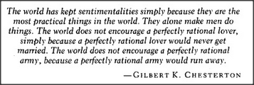

Does a book know what is written inside it? Clearly, no. Does a book contain knowledge? Clearly, yes. But how could anything contain knowledge, yet not know it? We've seen how saying that a person or machine possesses knowledge amounts to saying that some observer could employ that person or machine to answer certain kinds of questions. Here is another view of what it means to know.
Jack knows about A means that there is a model M of A inside Jack's head.
But what does it mean to say that one thing is a model of another and how could one have a model in one's head? Again, we have to specify some standard or authority. Let's make Jack be the judge of that:
Jack considers M to be a good model of A to the extent that he finds M useful for answering questions about A.
For example, suppose that A is a real automobile, and M is the kind of object we call a toy or model car. Then Jack will be able to use M to answer certain questions about A. However, we would think it strange to say that M is Jack's knowledge about A — because we reserve the word knowledge for something inside a head, and Jack can't keep a toy inside his head. But we never said that a model must be an ordinary physical object. Our definition allows a model to be anything that helps a person answer questions. Accordingly, a person could possess a mental model, too — in the form of some machinery or subsociety of agents inside the brain. This provides us with a simple explanation of what we mean by knowledge: Jack's knowledge about A is simply whichever mental models, processes, or agencies Jack's other agencies can use to answer questions about A. Thus, a person's mental model of a car need not itself resemble an actual car in any obvious way. It need not itself be heavy, fast, or consume gasoline to be able to answer questions about a car like How heavy is it? or How fast can it go?
Our mental models also work in social realms to answer questions like Who owns that car? or Who permitted you to park it there? However, to understand questions like these, we have to ask what people mean by who — and the answer is that we make mental models of people, too. In order for Mary to know about Jack's dispositions, motives, and possessions, Mary has to build inside her head some structure to help answer those kinds of questions — and that structure will constitute her mental model of Jack. Just think of all the different things our person-models do for us! If Mary knows Jack well enough, she'll be able to reply not only to physical questions like How tall is Jack? but also to social inquiries such as Does he like me? and even to psychological queries like What are Jack's ideals? Quite possibly, Mary's model of Jack will be able to produce more accurate answers to such questions than Jack himself could produce. People's mental models of their friends are often better, in certain respects, than their mental models of themselves.
We all make models of ourselves and use them to predict which sorts of things we'll later be disposed to do. Naturally, our models of ourselves will often provide us with wrong answers because they are not faultless ways to see ourselves, but merely self-made answering machines.
